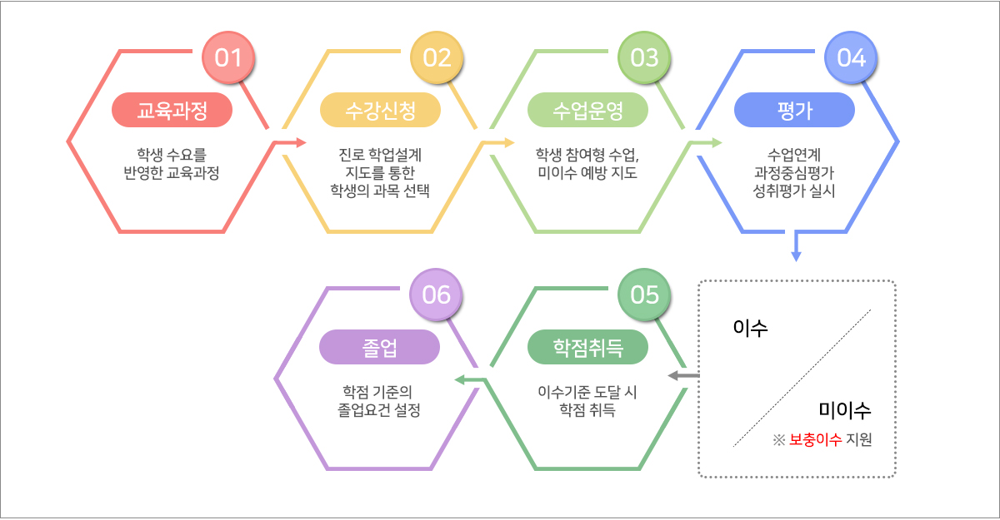

고교학점제란?
고교학점제는 학생들이 자신의 진로와 적성에 맞게 과목을 선택하고 이수 기준을 충족하여 졸업하는 제도입니다. 이전에는 학생들이 고정된 교육과정에 따라 수업을 들어야 했지만, 이제는 자신이 원하는 과목을 선택하여 들을 수 있습니다. 또한 학생이 목표한 성취 수준에 도달했다면 학생이 이수한 학점을 인정해 줍니다. 이전에는 출석 일수로 졸업 여부를 결정했지만, 이제는 학생이 누적한 과목 이수 학점이 졸업 기준에 도달하면 졸업이 가능해집니다. 이러한 제도로 인해 학생들은 자신이 원하는 분야에서 보다 효과적인 학습을 할 수 있게 되며, 학생들의 배움의 질도 보다 향상될 수 있습니다.
운영

교육과정 : 학교에서는 우선 학습자의 과목 선택권이 보장되는 학점 기반의 교육과정을 편성합니다.
수강신청 : 학생의 학업 설계 결과와 수요 조사를 반영하여 개설이 가능한 과목을 확정하고, 학생은 개설된 과목중 원하는 과목을 선택하여 개인 시간표를 작성합니다.
수업 : 개인시간표에 따라 수업에 참여합니다.
이수/미이수 : 교사는 석차보다는 학생이 성취 기준에 어느 정도 도달했는가를 평가함으로써 학생의 과목 이수 여부를 결정합니다.
학점취득 : 학생은 이수한 과목에 대한 학점을 취득하게 됩니다.
졸업 : 누적 학점이 졸업 기준에 도달하면 고등학교를 졸업하게 됩니다.